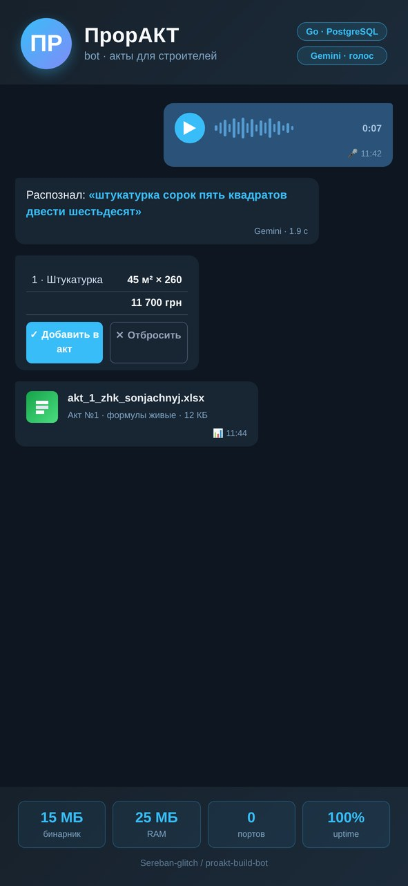
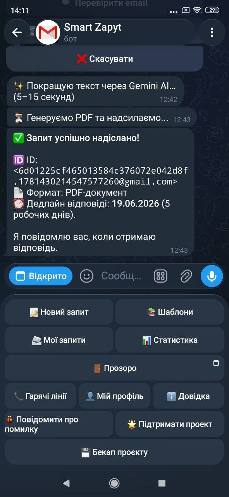
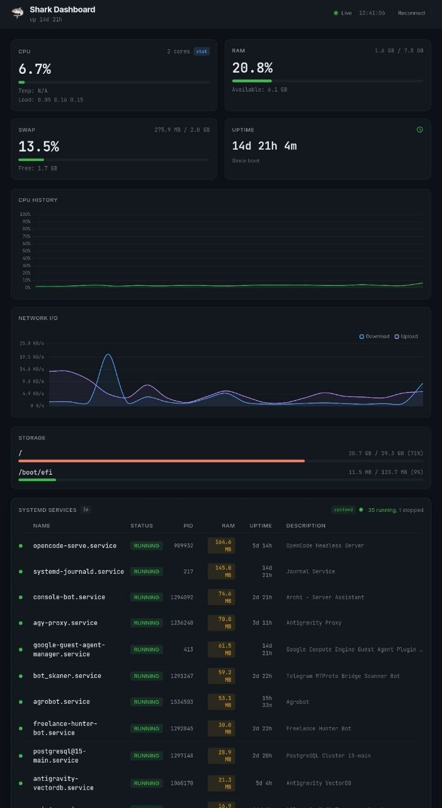
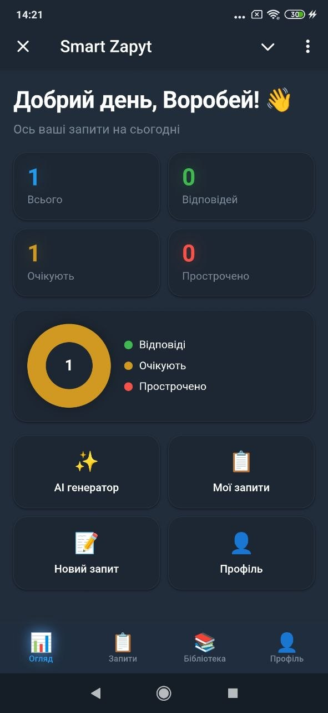

Backend & AI Automation Developer. Строю автономные AI-агенты и zero-dependency бэкенды, которые работают везде: от облачных серверов до мобильных устройств.
Максимальная автоматизация. Код сам разворачивается на сервере — без ручных команд, без SSH-сессий. AGENT_DEPLOY_CHAIN как стандарт.
Go-бинарники меньше 10MB без единой внешней зависимости. Работают на чистом Linux, ARM64 (Termux) и AMD64 (GCP).
Автономные агенты с циклом Reasoning + Acting. Умеют видеть скриншоты, выполнять Bash, писать файлы и принимать решения.
Каждый проект автоматически определяет окружение: systemd, PM2 или supervisord. Одна кодовая база — любой хостинг.

Telegram-бот для мастеров отделочных работ: акты выполненных работ в Excel с живыми формулами, диктовка позиций голосом, прайс-лист с автоподстановкой и редактированием цен («было → стало» при изменении), оплаты и долги, фото скрытых работ. Спроектирован «линзой строителя»: ↩️ убрать последнюю позицию при ошибке, 👀 черновик с промежуточной суммой, защита от потери надиктованного. Парсер понимает реальный ввод строителя: «45м» без пробела, несколько позиций одной строкой, а двусмысленные строки переспрашивает вместо угадывания денег; ошибочный акт удаляется через /acts. Фото скрытых работ не просто сохраняются — по кнопке из 🏠 Объектов бот высылает фотоотчёт по file_id (дата, акт, подпись «электрика, до штукатурки»), а 📊 Отчёт показывает упущенную выгоду: не оплачено и акты без цены. Голосовой конвейер OGG/Opus → Gemini с обходом ограничения прокси-конвертера (аудио едет «image»-блоком — модель слышит настоящий звук). Один статический Go-бинарник 15 МБ, PostgreSQL, ~25 МБ RAM, ноль портов. В production с 2026: живой мастер закрывает акты за минуты, а не вечера.
Исходный код
AI-агент для автоматизации FOI-запросов к госорганам Украины. Больше не нужно составлять заявления, запечатывать конверты и стоять в очередях на почте. Одно голосовое сообщение (30 секунд) — AI формирует юридически грамотный текст, находит госорган в базе и отправляет официальный запрос через SMTP. Ответ приходит на почту и в Telegram.
Исходный код
Zero-dependency веб-дашборд мониторинга процессов. Автоматически определяет systemd, PM2 и Supervisord через единый интерфейс ProcessManager. Умная сортировка по RAM, янтарные капсулы использования памяти, стильный тёмный UI. Один бинарник — никакой базы данных, никаких внешних зависимостей.
Исходный код
Автономный ReAct AI-агент для DevOps в Telegram. Мультимодальный: видит скриншоты сервера и принимает решения. Выполняет Bash-команды, редактирует файлы, управляет процессами. Оснащён zero-touch деплойментом через AGENT_DEPLOY_CHAIN.md — просто дай агенту ссылку на репозиторий.
Исходный код